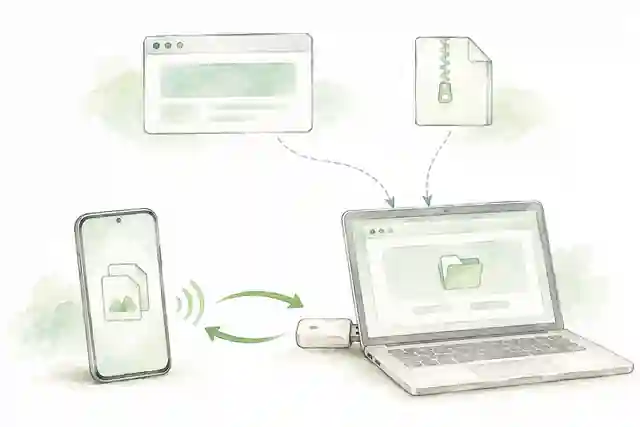

Opening the transfer webpage only loads the interface. Files move directly between your phone, TransferHub and computer over local Wi-Fi and USB — not through VisualBuild servers.

Light dashed lines: how the interface is obtained. Green arrows: the actual file path.
Download once, open the HTML locally, or self-host it over HTTPS.
Only loading the online interface needs an internet connection. After downloading the offline ZIP in advance, you can use it without visiting our website. On the computer, use Chrome or Edge.
Before you start
You will need TransferHub, a USB data cable, a computer with Chrome or Edge, and a Wi-Fi phone or tablet with a browser.
Recommended platforms
Android12+
iOS17+
iPadOS17+
Windows11
macOS14+
LinuxMainstream distributions
Use a current Chrome, Edge or Safari browser for wireless transfer. For USB computer transfers, use desktop Chrome or Edge.
Cross-platform file transfer between Android, iOS, iPadOS, Windows, macOS and Linux. Use the recommended browser and system versions above.
Helpful tips
Chrome or Edge is recommended for the computer-side USB connection. Keep the USB cable connected. For offline transfers, download and extract the complete tool package in advance.
Interested in TransferHub? Contact us for product details and ordering options.
Die Online-Seite lädt nur die Bedienoberfläche. Dateien werden direkt zwischen Smartphone, TransferHub und Computer über lokales WLAN und USB übertragen – nicht über VisualBuild-Server.
Helle gestrichelte Linien: Bezug der Oberfläche. Grüne Pfeile: tatsächlicher Dateiweg.
Vorab herunterladen, HTML lokal öffnen oder selbst über HTTPS bereitstellen.
Nur das Laden der Online-Oberfläche benötigt Internet. Mit dem zuvor geladenen ZIP ist kein Zugriff auf unsere Website nötig. Am PC Chrome oder Edge verwenden.
Vorbereitung
Bereiten Sie TransferHub, ein USB-Datenkabel, einen PC mit Chrome oder Edge sowie ein Smartphone oder Tablet mit WLAN und Browser vor.
Empfohlene Plattformen
Android12+
iOS17+
iPadOS17+
Windows11
macOS14+
LinuxGängige Distributionen
Für die drahtlose Übertragung empfehlen wir aktuelle Versionen von Chrome, Edge oder Safari. Für die USB-Übertragung am Computer verwenden Sie Chrome oder Edge in der Desktop-Version.
Plattformübergreifender Dateitransfer zwischen Android, iOS, iPadOS, Windows, macOS und Linux. Wir empfehlen die oben genannten Systemversionen und Browser.
Tipps zur Verwendung
Für die USB-Verbindung am Computer empfehlen wir Chrome oder Edge. Das USB-Kabel angeschlossen lassen. Für Offline-Nutzung das komplette Paket vorab herunterladen und entpacken.
Informationen zu TransferHub und Bestellungen erhalten Sie auf Anfrage.
TRANSFERHUB
Transférez des fichiers dans les deux sens entre Wi-Fi et ordinateur USB.
La page en ligne ne charge que l’interface. Les fichiers circulent directement entre le téléphone, TransferHub et l’ordinateur via le Wi-Fi local et l’USB, sans passer par les serveurs VisualBuild.
Pointillés clairs : chargement de l’interface. Flèches vertes : trajet réel des fichiers.
Télécharger puis ouvrir le HTML localement, ou l’héberger via HTTPS.
Seul le chargement de l’interface en ligne nécessite Internet. Avec le ZIP téléchargé à l’avance, aucun accès au site n’est nécessaire. Sur PC, utilisez Chrome ou Edge.
Préparation
Prévoyez TransferHub, un câble USB, un ordinateur avec Chrome ou Edge, ainsi qu’un téléphone ou une tablette avec Wi-Fi et navigateur.
Plateformes recommandées
Android12+
iOS17+
iPadOS17+
Windows11
macOS14+
LinuxDistributions courantes
Pour le transfert sans fil, utilisez une version récente de Chrome, Edge ou Safari. Pour le transfert USB sur ordinateur, utilisez Chrome ou Edge pour ordinateur.
Transfert de fichiers multiplateforme entre Android, iOS, iPadOS, Windows, macOS et Linux. Utilisez de préférence les versions et navigateurs indiqués ci-dessus.
Conseils pratiques
Chrome ou Edge est recommandé pour la connexion USB sur PC. Gardez le câble branché. Pour une utilisation hors ligne, téléchargez et décompressez l’ensemble des fichiers au préalable.
Pour en savoir plus sur TransferHub et les commandes, contactez-nous.
تُحمّل صفحة الويب واجهة الاستخدام فقط. أما الملفات فتنتقل مباشرةً بين الهاتف وTransferHub والكمبيوتر عبر Wi-Fi المحلي وUSB، دون المرور بخوادم VisualBuild.
الخطوط المتقطعة الفاتحة لتحميل الواجهة، والأسهم الخضراء لمسار نقل الملفات الفعلي.